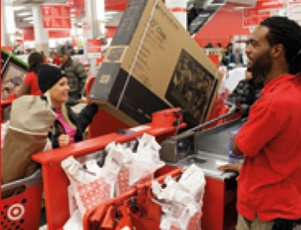
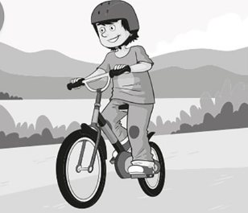
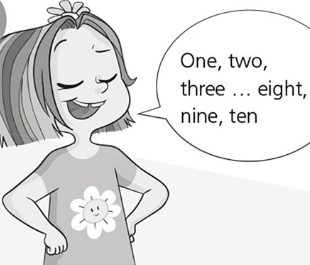
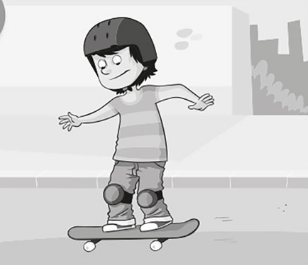
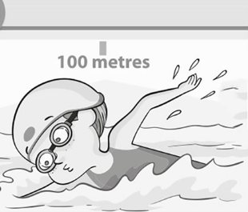
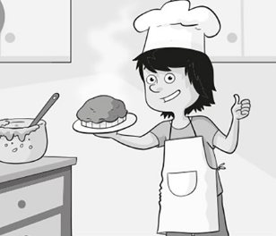

Part 1 of 2: first, try to live for a week without money! Then talk about what people could and couldn't do, and compare things (Own it! 2, Student's Book page 49).
Warm-up gameGrammar: could / couldn'tGrammar: Comparatives & superlativesListening: Black Friday
👩🏫 Teacher's plan · Part 1 TB p79
Lesson aim
I can use could and comparative and superlative adjectives.
Flow
Warm-up game: survive a week without money (revises Lesson 05: Mark Boyle + money verbs).
could / couldn't: Ex 2, then Use it! Ex 3–4. Ex 1 is left out because it was used before.
Comparatives and superlatives: Ex 5, Get it right!, Ex 6, Ex 7 (audio 4.04).
Use it! Ex 8: compare things you know.
Extras on this page hidden until you open them
Video 4.2 (the TB Warmer) · Extra grammar practice · Grammar game · Finished? SB p121 Ex 2 · Workbook p34 (TB homework) TB p79
Warm-up: a week without money 🏕️
👩🏫 Teacher notes New · links to Lesson 05
A quick game that replaces the TB warmer. It brings back Mark Boyle and the money verbs (borrow, owe, pay, spend, sell, earn, save, lend, cost), and quietly uses could / couldn't before she studies it.
She reads each day out loud and chooses. Ask "Why? What did Mark do?" before she taps.
She can play again, so wrong answers are fun too.
The questions after the game (easiest / most difficult) lead into comparatives and superlatives. Don't correct grammar yet.
1 solar power · 2 fruit, vegetables and plants · 3 walk or cycle · 4 make toothpaste · 5 cook dinner outside · 6 collect wood · 7 help for free
Do you remember Mark Boyle? Now it's your turn! Live for seven days without money. Choose what to do each day. How many 💚 can you get?
Day 1 of 7🤍🤍🤍🤍🤍🤍🤍
🔋
MondayYour phone is dead. You need to charge it.
🍕
TuesdayYou are very hungry. What do you do?
🚲
WednesdayYour friend lives 10 km away. How do you get there?
🪥
ThursdayYou don't have any toothpaste.
🎂
FridayIt's your best friend's birthday.
🥶
SaturdayIt's cold in your caravan tonight.
💷
SundayA man says: "I'll pay you £500 for one day of work!"
Talk about the game.
1
Which day was the easiest for you? Which was the most difficult?
Day … was the easiest.Day … was the most difficult because …
2
Could you live like this for a real week? What would you miss?
I think I could …I would miss …
Video 4.2: When I was young … 📺 Extra
👩🏫 Teacher notes TB p79 · Warmer
The TB warmer is this video (the TB prints "Video 2.2", but it is 4.2). It is only needed if she didn't watch it: the same video is in Lesson 05 Part 2 as the flipped-class task.
No, she couldn't (buy a horse). · Yes, she could (draw horses).
Get her to say that could is the past of can, and that we use it to talk about ability in the past.
Watch the vlog and answer the questions.
1. Could she buy a horse?
2. Could she draw horses?
Language in action
could / couldn't 🐴
What we were able to do in the past
👩🏫 Teacher notes TB p79 · Ex 2
Ex 1 (complete the could table) is not here, as it was used before. Use the box below as a quick reminder.
Drill the pronunciation: could /kʊd/ (or /kəd/ in faster speech). There is no /l/ sound.
Ex 2: after checking, get her to say that there is no to after could.
1 could receive · 2 couldn't buy · 3 could charge · 4 couldn't have
The key printed in the TB says "could have a shower" for number 4. The article says he couldn't, so this page checks for couldn't have.
She could draw horses. She couldn't buy a horse. Could she draw? – Yes, she could. / No, she couldn't. could + verb: could drawNOTcould to draw
2. Complete the sentences with could or couldn't and the verbs in brackets. Check your answers in the article.
📰 Open the article: A different life
Mark had a good job and he earned a lot of money. One day, a friend challenged him to live without money. Mark decided he could change his life and do it.
First, he sold his houseboat, and he went to live in a caravan on a farm. He kept his laptop and mobile – he knew he could use solar power to charge them. He couldn't make any calls, but he could receive them.
The first few months were the worst – simple things were more difficult than before. Mark couldn't buy food, have a shower or travel easily. But he soon found his own food – usually vegetables, fruit and other plants. He made a stove to cook outside and he collected wood to use as fuel. He washed in a river and he used plants to clean himself. He even made his own toothpaste! He walked or cycled everywhere, so he was fitter and healthier than he was before.
So, was life without money better for Mark than life with money? Yes, it was. He was happier than before, and the best thing was that he felt more alive. He also discovered that friendship is more important than money.
The biggest and most difficult decision for Mark was returning to a life with money. After three years without money, what was the first thing he bought? A pair of trainers from a charity shop!
1. Mark calls on his phone. (receive) (example)
2. He food. (buy)
3. He his laptop with solar power. (charge)
4. He a shower. (have)
Use it! 🗣️
👩🏫 Teacher notes TB p79 · Ex 3–4
Ex 3: she completes the sentences so they are true. More than one idea is possible.
Ex 4: ask and answer. Take turns and ask follow-up questions (How old were you when you could …?).
★★★After feedback: she repeats the task with her own ideas (last box).
3. Complete the sentences. Use could / couldn't and the ideas in the box.
buy my own clothesmake my own lunchride a bikeuse a laptop
1. When I was five, I …
2. When my grandparents were young, they …
3. A year ago, I …
4. Ask and answer with your teacher.
❓
Could you buy your own clothes when you were five?
Yes, I could.No, I couldn't.
❓
Could your grandparents use a laptop when they were young?
Yes, they could.No, they couldn't.
Now use your own ideas. What could or couldn't you do when you were little?
My sentence:
My question:
Language in action
Comparative and superlative adjectives 🏆
happier · the happiest
👩🏫 Teacher notes TB p79 · Ex 5 + Get it right!
★ A short adjective has one syllable (or one syllable and another ending in -y). A long adjective has two or more syllables.
Get it right! Drill than in the example sentence. Said naturally in a sentence it is /ðən/, not /ðæn/.
1 fitter · 2 happier · 3 more important · 4 more difficult · 5 better · 6 the worst
5. Complete the cards. Use the article to help you. fitter is an example.
📰 Open the article: A different life
Mark had a good job and he earned a lot of money. One day, a friend challenged him to live without money. Mark decided he could change his life and do it.
First, he sold his houseboat, and he went to live in a caravan on a farm. He kept his laptop and mobile – he knew he could use solar power to charge them. He couldn't make any calls, but he could receive them.
The first few months were the worst – simple things were more difficult than before. Mark couldn't buy food, have a shower or travel easily. But he soon found his own food – usually vegetables, fruit and other plants. He made a stove to cook outside and he collected wood to use as fuel. He washed in a river and he used plants to clean himself. He even made his own toothpaste! He walked or cycled everywhere, so he was fitter and healthier than he was before.
So, was life without money better for Mark than life with money? Yes, it was. He was happier than before, and the best thing was that he felt more alive. He also discovered that friendship is more important than money.
The biggest and most difficult decision for Mark was returning to a life with money. After three years without money, what was the first thing he bought? A pair of trainers from a charity shop!
Short: fit
Comparative
Superlativethe fittest
Short (-y): happy
Comparative
Superlativethe happiest
Long: important
Comparative
Superlativethe most important
Long: difficult
Comparative
Superlativethe most difficult
Irregular: good
Comparative
Superlativethe best
Irregular: bad
Comparativeworse
Superlative
When you compare, be careful!
We use than, not that, to compare two things. My sister is fitter than me. NOTMy sister is fitter that me.
👩🏫 Teacher notes TB p79 · Ex 6
1 better · 2 The best · 3 The most difficult
After checking, briefly discuss: what was the most interesting fact about the text? Get several uses of more interesting and the most interesting.
6. Complete the sentences with the comparative or superlative form of the adjectives.
1. Life for Mark without money was (good) than before. (example)
2. (good) thing was that he felt more alive.
3. (difficult) decision was to return to a life with money.
💬 What was the most interesting fact about Mark?
Listening
Black Friday 🛍️
Complete the text · Listen and check
👩🏫 Teacher notes TB p79 · Ex 7 · Audio 4.04
★ Remind her to use the before superlative adjectives.
1 the busiest · 2 cheaper · 3 better · 4 the latest · 5 the most stylish · 6 the worst · 7 more interested · 8 happier
In the audioscript, number 3 is "the best prices", while the answer key says better. Both are marked right. Similarly the script has "the latest gadgets or the most stylish trainers".
This year Black Friday is on 27 November 2026. Ask if she buys anything then.
📄 Audioscript 4.04 (TB p165)
It's the fourth Friday in November and it's Black Friday. It's the busiest shopping day of the year. Things are cheaper than usual today. Shoppers can get the best prices for the latest gadgets or the most stylish trainers. In my opinion, Black Friday is the worst day of the year. People seem to be more interested in shopping than anything else! I think we could all be happier people without spending money all the time.

7. Complete the text with the comparative or superlative form of the adjectives. Then listen and check.
It's the fourth Friday in November and it's Black Friday. It's 1 (busy) shopping day of the year. Things are 2 (cheap) than usual today. Shoppers can get 3 (good) prices for 4 (late) gadgets or 5 (stylish) trainers. In my opinion, Black Friday is 6 (bad) day of the year. People seem to be 7 (interested) in shopping than anything else! I think we could all be 8 (happy) people without spending money all the time.
💬 Do you agree with the speaker? Why / Why not?
Use it!
Compare! 🗣️
Comparatives and superlatives
👩🏫 Teacher notes TB p79 · Ex 8
First ask for more adjectives she can use (e.g. boring, easy, interesting, exciting, useful) and write them in the box.
She chooses a topic and compares the three things. Disagree with her a little, so she has to say more.
8. Choose a topic or use your own. Compare the three things. Use comparatives and superlatives.
📚
maths / history / science
… is easier than …… is the most useful
🛒
market / shopping centre / online shopping
… is cheaper than …… is the best because …
💡
Your own topic!
… is more exciting than …… is the worst
History is more difficult than … but … is the most difficult.
What other adjectives can you use?
boringeasyinterestingexcitinguseful
More adjectives:
Extra grammar practice 💪 Extra
👩🏫 Teacher notes TB p79 · Extra grammar practice
The TB's Extra grammar practice is on Cambridge One and isn't in our files. This short version was written for this lesson.
A: 1 could · 2 couldn't · 3 Could · 4 go · 5 couldn't B: 1 than · 2 bigger · 3 the funniest · 4 more useful · 5 worse · 6 the most expensive
A. Choose the correct option.
1. My grandad ___ speak three languages, so he got a job in an airport.
2. We ___ pay for the pizza because I left my money at home.
3. ___ you swim when you were four?
4. He couldn't ___ to the cinema yesterday.
5. I ___ find my phone this morning.
B. Choose the correct option.
1. Your bike is newer ___ my bike.
2. London is ___ than Oxford.
3. This is ___ video on the internet!
4. A phone is ___ than a camera.
5. The weather today is ___ than yesterday.
6. It's ___ shop in town. I never buy anything there.
Grammar game: Who is it? 🕵️ Extra
👩🏫 Teacher notes TB p79 · Grammar game
The TB plays this in groups: one student thinks of a classmate, and the others can only ask questions with comparatives or superlatives. The first to guess thinks of the next person.
Use people you both know (friends she talks about, family, singers, actors, YouTubers). Agree on a list of five or six names first, then take turns.
Think of a person you both know. Don't say the name! Your teacher asks questions with comparatives or superlatives. Then swap.
❓
Is he taller than you?
No, he is shorter than me.
❓
Is she the funniest person in your family?
Yes, she is!
❓
Is he more famous than …?
Yes, he is much more famous.
Our people:
My questions:
Finished? Famous shopping malls 🏬 Extra
👩🏫 Teacher notes TB p79 → SB p121 Ex 2
For when she finishes early. She reads the clues and works out the missing numbers.
1 2008 (1981 + 27) · 2 490,000 m² · 3 15 million · 4 1,200
2. Read the information and complete the cards about famous shopping malls. Number 1 is an example.
• The West Edmonton Mall is 27 years older than the Dubai Mall. • The West Edmonton Mall is 12,000 m² smaller than the Dubai Mall. • The Dubai Mall is the most popular. It has 39 million more shoppers per year than Harrods. • The Dubai Mall is the biggest. It has 870 more shops/departments than Harrods.
West Edmonton Mall, Canada
Opened1981
Size2
Shoppers per year32 million
Shopsmore than 800
Dubai Mall, UAE
Opened1
Size502,000 m²
Shoppers per year54 million
Shops4
Harrods, UK
Opened1849
Size20,000 m²
Shoppers per year3
Departments330
Write one more sentence about the malls.
My sentence:
Workbook p34: could, comparatives, superlatives 📘 Extra
👩🏫 Teacher notes TB p79 · Homework: Workbook p34
The TB sets this as homework. Answers from the Workbook answer key (TB p180).
Ex 1: 1 e · 2 a · 3 d · 4 c · 5 f · 6 b Ex 2: own answers: ride a bike · count to ten in English · ride a skateboard · swim (100 metres) · make a cake · use a (mobile) phone Ex 3: 1 more exciting · 2 happier · 3 the most important · 4 the most difficult · 5 shorter · 6 more helpful Ex 4: 2 Was your phone more expensive than mine? · 3 What's worse than losing your wallet? · 4 Monday is the quietest day in town. · 5 These are the cheapest jeans in the shop. / These jeans are the cheapest in the shop. · 6 Yesterday was the best day of my life. Ex 5: 1 the most famous · 2 older · 3 the richest · 4 more exciting · 5 the most successful · 6 the most expensive
1. Match 1–6 with a–f.
a because she didn't have any money. b so they couldn't change their dollars. c from the age of four. d and we couldn't see anything. e so I couldn't buy anything. f when he was younger.
1. I had no money, (example)
2. Sara couldn't lend me £10
3. All the lights in the shop went out
4. Mozart could play and write music
5. My dad could run marathons
6. The bank was closed,
2. Write sentences that are true for you when you were six. Use the pictures.
1

2

3

4

5

6
1. (example)
2.
3.
4.
5.
6.
3. Choose the correct options.
1. The film was ___ than the book. (example)
2. Samir was ___ in his old job than he is now.
3. Money isn't ___ thing in life.
4. It was ___ decision for him to make.
5. Today's lesson was ___ than yesterday's.
6. The shop assistants were ___ than they usually are.
4. Put the words in the correct order to make sentences.
1. yesterday / than / was / It's / today / it / hotter (example)
2. mine / phone / than / your / Was / expensive / more / ?
3. worse / What's / than / your / losing / wallet / ?
4. quietest / town / Monday / the / is / in / day
5. are / cheapest / shop / the / jeans / These / in / the
6. best / life / Yesterday / of / the / my / day / was
5. Complete the text with the comparative or superlative form of the adjectives in the box.
excitingexpensivefamousoldrichsuccessful
I got some money for my birthday, so I bought a ticket to a City game. Everyone knows City: they're 1 football team in the world. I think they're 2 than the other clubs in my country because my great-grandad was a City fan when he was a kid, and that was a long time ago! And they've got lots of money, so they're definitely 3. Their football is fast and they score lots of goals, so they're 4 to watch than other teams. I also think they are 5 team because they win most of their games. The only bad thing is I can't go to every match because the tickets are probably 6 tickets in the world.
Homework
🏠 Homework
No homework here yet. Your teacher will add tasks after the lesson.
Do these tasks at home. Your answers are saved automatically — press Check ✓ to see how you did.
Photo credits
Photo, article and exercises: Own it! 2 Student's Book (Cambridge University Press), pages 48–49 and 121.
Workbook pictures and exercises: Own it! 2 Workbook, page 34. Audio 4.04 and Video 4.2: Own it! 2 (Cambridge University Press).